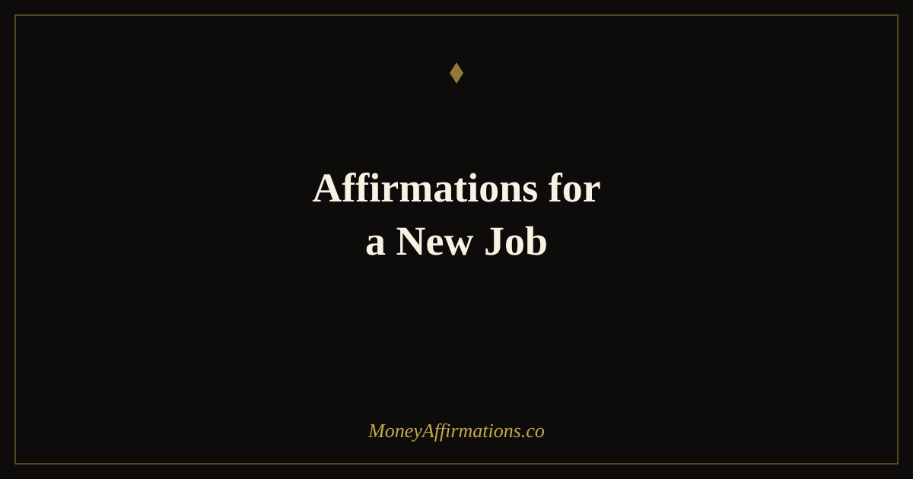

50 Affirmations for a New Job to Step Into Your Worth and Thrive

Starting a new job is one of life's great double-edged transitions. On one side is genuine excitement — a new opportunity, a fresh start, the possibility of growth, better pay, and a role that fits more of who you are becoming. On the other side is a particular kind of insecurity that is hard to articulate: the feeling that you have been let into a room where everyone else somehow belongs more than you do.
These 50 affirmations walk with you through the full arc of a job transition — from the night before your first day through the long game of building your reputation, earning what you deserve, and establishing yourself as someone who belongs exactly where they are. They are organized as a timeline because that is how a new job actually unfolds: in stages, each with its own emotional terrain. Use the group that matches where you are right now.
Starting a new job activates both excitement and deep insecurity at the same time. These affirmations are designed to walk with you through the transition — from first-day nerves to settled confidence to long-term professional prosperity.
What are affirmations for a new job?
Affirmations for a new job are present-tense statements that address the specific emotional and identity challenges of professional transitions. They differ from general career affirmations in that they are rooted in the particular experience of being new: the unfamiliarity, the performance anxiety, the income identity shift, and the slow process of proving yourself in a space where no one yet knows your full capabilities. These affirmations work by reinforcing a stable internal sense of self-worth that does not depend on external validation from your new colleagues, your manager, or early performance reviews. They also address the financial dimension of starting a new role — the income change, the sense of deserving what you are being paid, and the longer-term vision of what this role can become for your financial life.
50 new job affirmations
Before your first day — calm the anticipation
- I am ready for this new chapter, and my readiness is real even when my nerves feel louder.
- I was chosen for this role because I bring something genuinely valuable to this team.
- The anticipation I feel is energy — and I channel it into excitement, not fear.
- I give myself permission to be a beginner in this role. Not knowing everything is part of starting.
- I carry my full professional history with me into this new role, and that foundation is strong.
- Tomorrow I walk in as myself, and that is enough to begin with.
- I release the pressure to impress everyone on day one. My first job is to show up and be present.
- Every person in that office was also new once. I belong there just as much as they do.
- I approach this new beginning with an open mind, a warm heart, and a grounded sense of my own worth.
- I am grateful for this opportunity and I am going to make the most of it, one day at a time.
First week — settling in and finding your feet
- I am learning fast and integrating everything I need to succeed in this role.
- I ask good questions because I know that asking questions is a sign of intelligence, not weakness.
- I navigate the unfamiliar with patience and curiosity rather than anxiety.
- I am building genuine connections with my colleagues, one conversation at a time.
- Feeling unsettled this week is normal. It does not mean I am failing — it means I am adapting.
- I trust the instincts and skills I have developed over years of work. They are with me here too.
- I am someone who learns quickly and contributes meaningfully in every environment I enter.
- I notice what is working and I build on it. I notice what is challenging and I grow from it.
- By the end of this week I feel more settled than when I started, and that momentum continues.
- I am becoming part of this team, and this team is becoming part of my professional story.
For your income and earning power in this role
- I deserve the salary I am receiving. My skills and experience justify every dollar of it.
- This income is evidence that my value in the marketplace is real and recognized.
- I manage my new income with intention, building the financial foundation this role makes possible.
- I am open to earning raises and bonuses in this role by delivering consistent, visible results.
- My earning power is growing alongside my professional capabilities. The two rise together.
- I negotiate for what I deserve because I know my market value and I speak it with confidence.
- This salary is my starting point, not my ceiling. I grow into greater earning as I grow in this role.
- I receive my paycheck with gratitude and with the knowledge that I have fully earned it.
- I am financially better off in this role, and I build wisely on the stability it provides.
- My income from this job is a tool for the life I am building, and I use it with wisdom and vision.
For building your reputation and visibility
- I show up consistently, and consistency is how reputations are built — not by single moments.
- My contributions are noticed because I bring genuine care and capability to every task.
- I speak up in meetings because my perspective has value and my voice deserves to be heard.
- I am becoming known as someone reliable, creative, and easy to work with.
- I build relationships in this workplace with authenticity rather than performance.
- My reputation here is being built one action, one conversation, one deliverable at a time.
- I take initiative in ways that are visible and meaningful to the people I work with.
- I share credit generously and I receive recognition gracefully — both build trust.
- I am someone my manager and colleagues are glad they brought onto this team.
- The impression I am making in this role is positive, lasting, and genuinely mine.
For long-term growth and prosperity in this position
- This job is a chapter in a long and prosperous professional story, and it is a strong one.
- I grow beyond this role's initial boundaries because I am someone who expands into opportunity.
- I advocate for my own advancement because I know what I contribute and I am worth more every year.
- I use this position to build skills, savings, and a professional network that will serve me for decades.
- My career and my financial life are both moving in the right direction from this role forward.
- I am building the kind of track record in this position that opens the next door before I need it.
- I look back on this new-job season one year from now and feel proud of how I showed up from day one.
- The prosperity I experience in this role extends beyond my salary into learning, relationships, and growth.
- I am not just doing a job — I am building a career, and every day in this role adds to that foundation.
- I thrive here. This role was the right move, and every day confirms it.
How to use these affirmations
The timeline structure of this list is intentional — use the group that most closely matches where you are in your transition. In the days before you start, the first group will feel the most relevant. During your first week, lean on the second. The income group is particularly useful on paydays or before any salary conversation. The visibility group works well on Sunday evenings as you prepare for the week ahead, and the long-term group is best used on days when you question whether the move was right.
For daily practice, choose one to three affirmations from the most relevant current group and repeat them in the morning before you start work. Say them aloud if possible — the physical act of speaking activates a different kind of conviction than reading silently. Write one on a sticky note inside your notebook or on your phone lock screen as a throughout-the-day reminder.
Do not wait until you feel completely settled before using the later groups. Reading the income and long-term affirmations from your very first week plants seeds of expectation that shape how you carry yourself in the role.
New job anxiety and imposter syndrome — the neuroscience of starting over
Imposter syndrome was first documented by psychologists Pauline Clance and Suzanne Imes in 1978, and their research found that it was particularly intense at moments of new achievement — including starting a new, more prestigious or better-compensated role. The experience is defined by the persistent internal fear that you do not truly deserve your position and that you will eventually be "found out." Crucially, imposter syndrome is not correlated with actual competence. Highly skilled, objectively qualified people experience it just as intensely as those who might genuinely be in over their heads.
From a neuroscience perspective, new environments activate the brain's threat-detection system. The amygdala — which processes novelty and risk — fires more frequently in unfamiliar settings. When your brain does not yet have established patterns for reading social cues, navigating office dynamics, or predicting outcomes, it defaults to heightened vigilance. This is not a sign that you are wrong to be there; it is a sign that your brain is doing exactly what it evolved to do in new environments.
Research on first impressions in workplaces suggests that early reputation formation happens fast — within the first few weeks — but it is also malleable over longer periods. What matters most is not brilliance in the first week but consistency, responsiveness, and genuine engagement over the first few months. Affirmations that reinforce a stable self-concept during this period help you show up with the groundedness that actually builds positive impressions, rather than the over-performance and approval-seeking that imposter syndrome drives.
Income identity is a less-discussed but powerful factor in new job transitions. When your title or pay changes — up or down — your sense of self shifts in ways that can feel disorienting. Affirmations that explicitly anchor your sense of deserving your new income help align your internal identity with your external reality faster.
Tips to make them work faster
- Morning ritual: Read your chosen affirmations before you leave for work, not during your commute. Give yourself five minutes of stillness to let the statements land before the day begins.
- Mirror work: On particularly anxious mornings, say your affirmations while looking at yourself in a mirror. It feels awkward at first — and that discomfort is precisely what makes it effective for imposter syndrome specifically.
- Journaling integration: After each workday during your first month, write one sentence completing this prompt: "Today I proved that I belong here because ___." This trains your brain to gather evidence for competence rather than evidence for doubt.
- Paycheck pairing: Every time your salary lands in your account, read the income group of affirmations. Over time your nervous system will associate receiving your pay with a sense of genuine deserving rather than low-grade guilt.
- Wind-down use: The long-term group works well as an evening read on Fridays — it anchors the week's progress and builds forward-looking confidence heading into the weekend.
Frequently asked questions
How long does new job anxiety usually last?
Research on workplace adjustment suggests that most people reach a baseline of comfort and competence in a new role within three to six months. The first two weeks tend to be the most intense for anxiety. If anxiety remains disruptive beyond three months, it may be worth exploring whether the role is a good fit or whether deeper support would help.
Can affirmations help me negotiate my salary in a new role?
Yes — affirmations that reinforce your sense of worth and belonging are particularly effective for salary negotiation preparation. The affirmations in the "income and earning power" group are written with this in mind. Pair them with concrete research on market rates for your role to combine mindset strength with factual grounding.
What if I feel like I am not qualified enough for this job?
This is one of the most common manifestations of imposter syndrome — and it is especially intense in new roles. The important thing to know is that the feeling of not being qualified enough is almost never an accurate reflection of reality. You were hired because someone saw genuine capability in you. The affirmations in the first and second groups are specifically written to address this internal gap between your actual ability and how you feel about it.
A new job is one of the most powerful moments to reshape your relationship with earning and financial identity. Explore our full money affirmations collection for deeper support around income confidence, financial worth, and the mindset that builds lasting prosperity alongside your career.